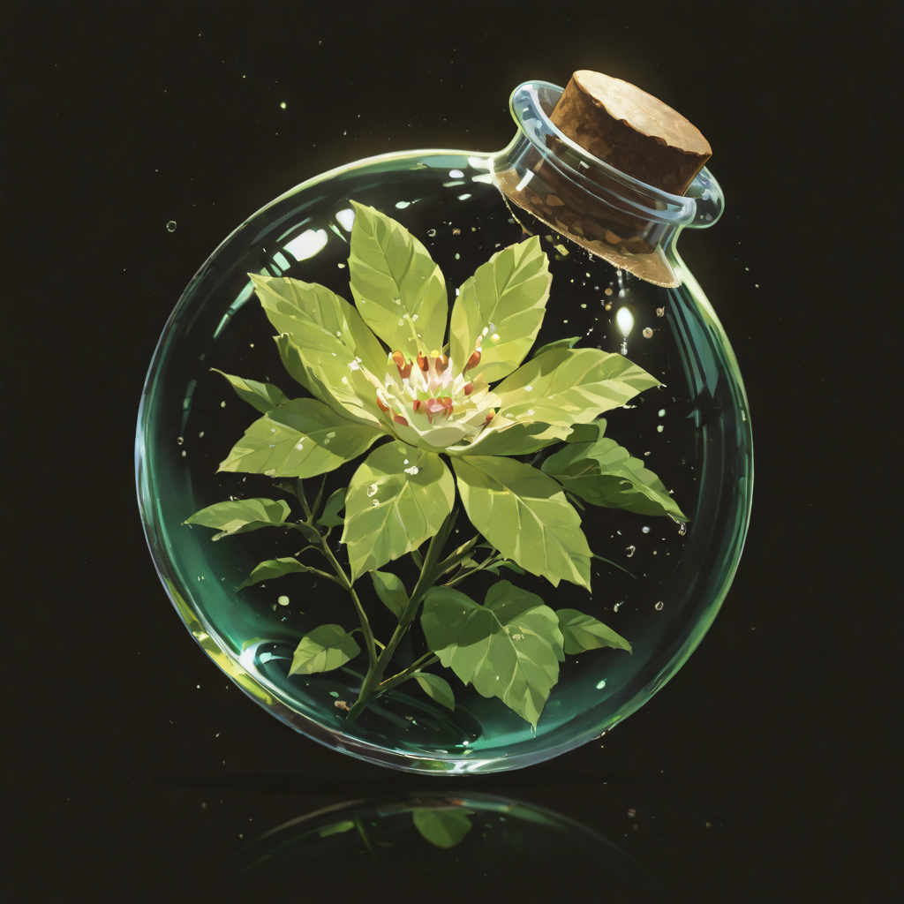

The Song the Forest Remembers
The Herbalist heals the way water finds its path , not by force, but by knowing exactly where to go. They carry a small wooden harp whose strings were grown, not made: each one a thread of living sap drawn from the oldest roots of the Forgotten homeland. When they play, the forest listens and responds.
In the Economy of Merit, the Herbalist is neither a soldier nor a scholar. They occupy something older , a role that existed before the Empire had a name for it. They remember the forests. They remember which plants close wounds and which ones open them. That memory lives not in their mind but in their hands, in the angle of a finger against a string.
Their eyes are green the way deep water is green , lit from within, calm on the surface, and bottomless if you look too long. Allies near them report feeling less afraid. No one has ever adequately explained why.
Tactical Data
Nature's Sage
Base Skill
Primordial Potion
Active SkillFlourish
PassiveGallery